Film Information
The team behind the worlds.
- Duration
- 06mn 07sec
- Format
- DCP 4K Cinemascope 2.39:1
- Official selections
- 18
- Awards
- 4




View the official film poster ↗
The Team
- Creative Direction
- David-Alexandre Chanel
- Technical Direction
- Jonathan Richer
- Film Direction
- Simon Pierrat
- Dancers
- Oob — Exocé Kasongo
Félicia Dotse
- Art Direction
- Julien Rivoire
Mathieu Courbier
- Music
- PMGN — Thomas Blanc
- Camera operator
- Joris Fleurot
- Camera assistant
- Pierre-Marie Charbonnier
- R&D Direction
- David-Alexandre Chanel
- Tech lead
- Benjamin Kuperberg
- Creative engineers
- Félix Cote
Alex Bourgeois
Olivier Meyer
Full credits & partners
Lighting by Rodolphe Martin / Stylism by Mathieu Courbier / Makeup by Aude Jeanneau / Editing by Simon Pierrat / Color grading by Baptiste Noyé.
Thanks to Gwendoline Jacquemin, Maëva Moreau, Juliette Planche, Camille Roy, Denis Kuperberg, Fabrice Bounin, Paul Pagès, Julien Dragon, Alban Delacourt, Yoshi, Yves Richer, Sophie Rossi, Arnaud Douchet, Dominique Lassarat, Tom Duchêne, Baptise Moizard, Pôle Pixel.
This video was shot using a new mixed reality technology developed by THEORIZ Studio. Shot in Studio Pagès. Video equipment provided by Compose it Prod. Crane provided by Locacine. Lighting equipment provided by Fa musique and Transpalux. Beamers provided by Panasonic, Alabama-media and Les grands Ateliers. Computers, performer tracking technology and beamers provided by THEORIZ Studio.
Partners: Fa Musique, Transpalux, Panasonic, Alabama-media, Studio Pagès, Lumières & associé, Locaciné, Les grands Ateliers, Compose it Prod, Lumières numériques, THEORIZ Studio, CNC-RIAM.